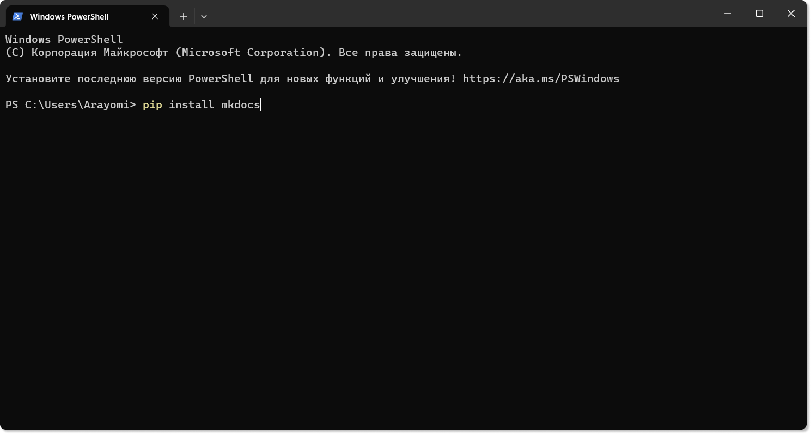
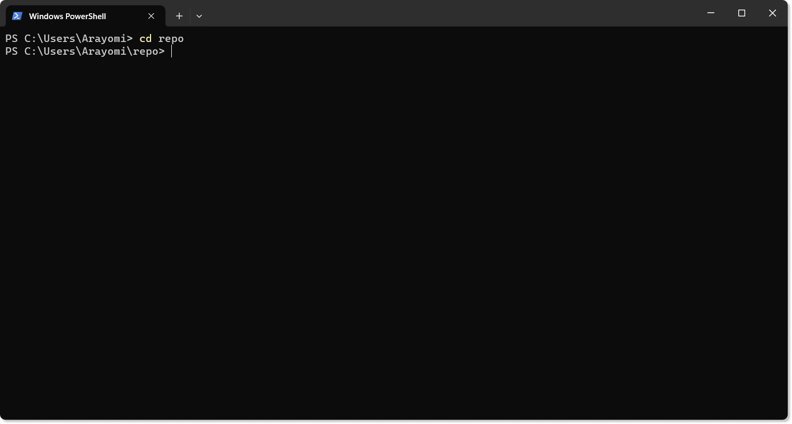
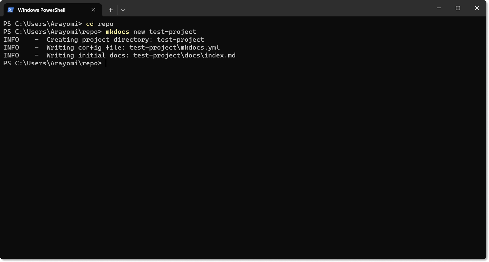
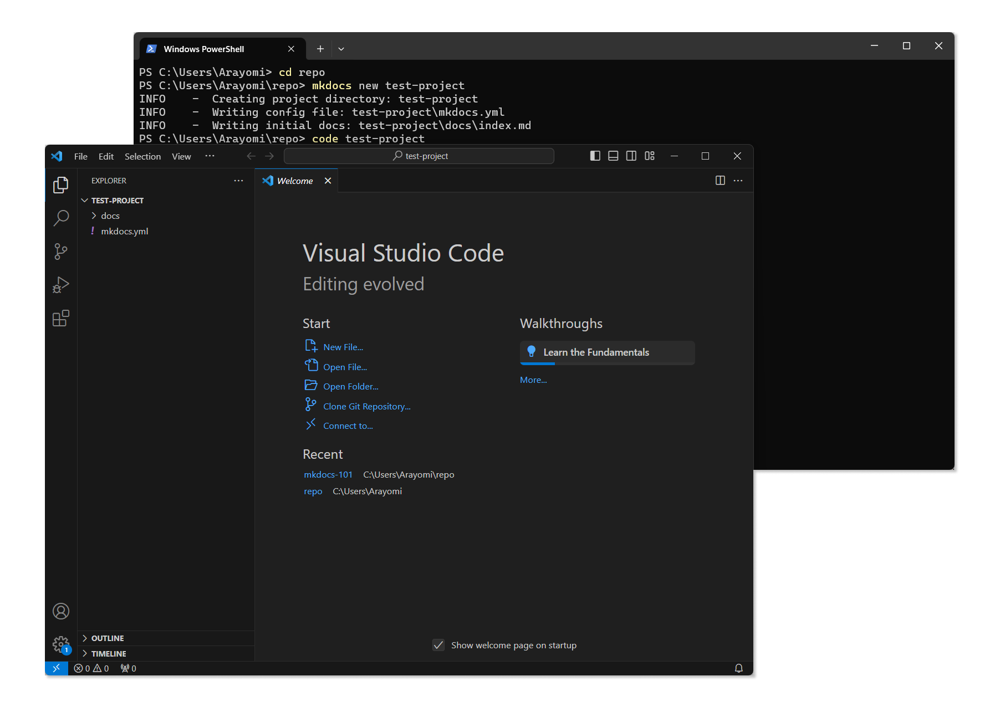
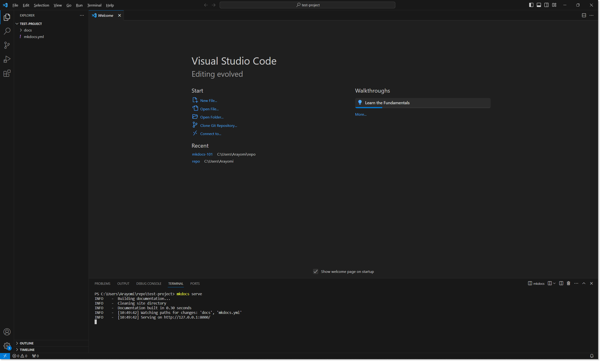

MkDocs
MkDocs — это генератор статических сайтов, который позволяет одной командой создать красивый сайт для вашей документации. Для работы с ним вам не нужно знать HTML, CSS и JavaScript.
Обязательно к установке:
- Python — писать код на Python вам не придётся, он просто нужен для работы MkDocs.
- VSCode — легковесный редактор кода. Необязательно использовать именно этот, но если у вас нет других личных предпочтений, — советую начать с него.
- MkDocs — сам MkDocs. Там нет каких-то файлов для скачивания, но можно почитать более подробную инструкцию по MkDocs. Подробнее об установке описано ниже.
При установке Python не забудьте проставить галочку "Add Python to PATH":
{kind=link}
Если пропустили, на этом сайте есть подробная инструкция, как можно добавить Python в PATH после установки.
В крайнем случае: переустановите Python и поставьте галочку.
Установка Mkdocs и создание проекта
Большая часть работы будет происходить в терминале (Unix) или в PowerShell (Windows). Примеры будут для PowerShell, но большинство команд актуально и для Unix-систем.
| Шаг | Скриншот |
|---|---|
Ввести в командной строке:pip install mkdocsЕсли pip не работает — может помочь перезагрузка компьютера. |
 |
С помощью команды cd перейти в папку, в которой будет создаваться репозиторий сайта.В примере папка находится в C:\Users\Arayomi\repo. По умолчанию PowerShell открывается в C:\User\Arayomi. Поэтому команда выглядит: cd repo |
 |
В нужной папке ввести команду: mkdocs new project-name.Вместо project-name можно ввести любое имя для будущего проекта.Его можно будет потом изменить. Папка с сайтом (репозиторий) будет называться так же, как и проект |
 |
Чтобы открыть проект в VS Code, надо ввести команду:code [абсолютный/относительный путь до репозитория].В примере в команде пишется относительный путь: code test-project |
 |
| VS Code позволяет открыть PowerShell внутри редактора. Для этого надо нажать на "Terminal" → "New Terminal" (или Ctrl+Shift+`). В новом терминале введите команду mkdocs serve.С помощью этой команды вы локально собрали ваш сайт по адресу 127.0.0.1:8000. |
 |
{kind=link}
{kind=link}
{kind=link}
{kind=link}
{kind=link}
Структура проекта
Структура проекта сразу после создания:
{kind=link}
- Папка
docs— основная папка, в которой лежат все документы проекта. index.md— главная страница сайта. Открывается по умолчанию при открытии сайта.mkdocs.yml— файл с конфигурацией сайта.
Конфигурация сайта
Первые настройки сайта начинаются с файла mkdocs.yml. Сразу после создания проекта файл выглядит примерно так:
site_name: My Docs
А сам сайт выглядит так:
{kind=link}
Это стандартная тема для сайтов сгенерированных с помощью MkDocs. В интернете много разных тем для MkDocs, основные можно посмотреть по ссылке.
Мне нравится тема material — на этом сайте используется она же. Примеры буду приводить с ней же.
Примечание: Какой-то функционал описанный в документации может не работать или работать некорретно в других темах. Если вы используете другую тему — изучайте документацию самой темы.
Советую отключать билд сайта каждый раз, когда вы редактируете файл конфигурации. Многие плагины и изменения не будут работать до перезапуска.
Для установки material:
- Тему сначала надо скачать. Введите в командной строке:
pip install mkdocs-material
- В файле
mkdocs.ymlдобавьте настройку:
theme:
name: material
Примечание: Отступы между вложенными частями в файле конфигурации можете выбирать сами, но они должны быть одинаковыми во всём файле.
- Запустите билд (
mkdocs serve) и радуйтесь красивой теме вашего сайта.
Дополнительные плагины и настройки, которые могут быть необходимы в документации:
| Настройка | Описание |
|---|---|
language: ru |
Вкладывается в theme и определяет язык темы. Для документации на английском языке настройку можно не менять, а для других языков смотрите обозначения в документации самой темы. Ссылка для material |
plugins: |
После двоеточия записывается список плагинов, которые вы хотите использовать на сайте. Рекомендую использовать glightbox — он позволяет открывать картинки в увеличенном размере на сайте кликом мыши. Без него картинки буду статичны. Плагины необходимо устанавливать через pip |
nav: |
Эта настройка определяет навигацию на всём сайте. Помогает выстроить точный порядок файлов на сайте. Например, на этом сайте я её использовал, чтобы страницы шли не в алфавитном порядке, а в хронологическом. Подробнее о настройке |